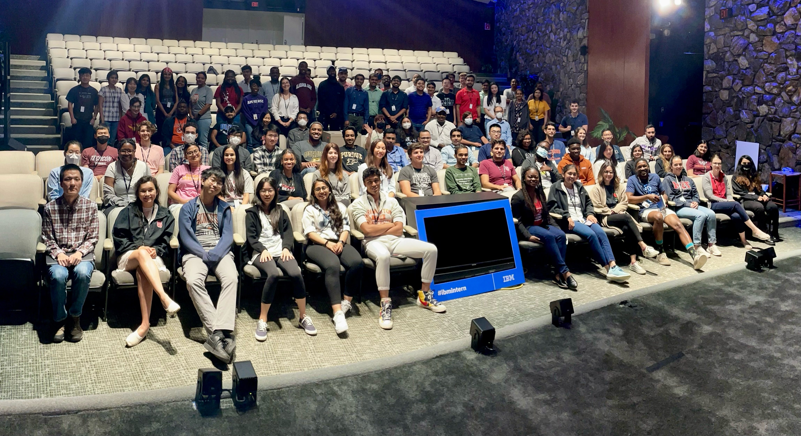
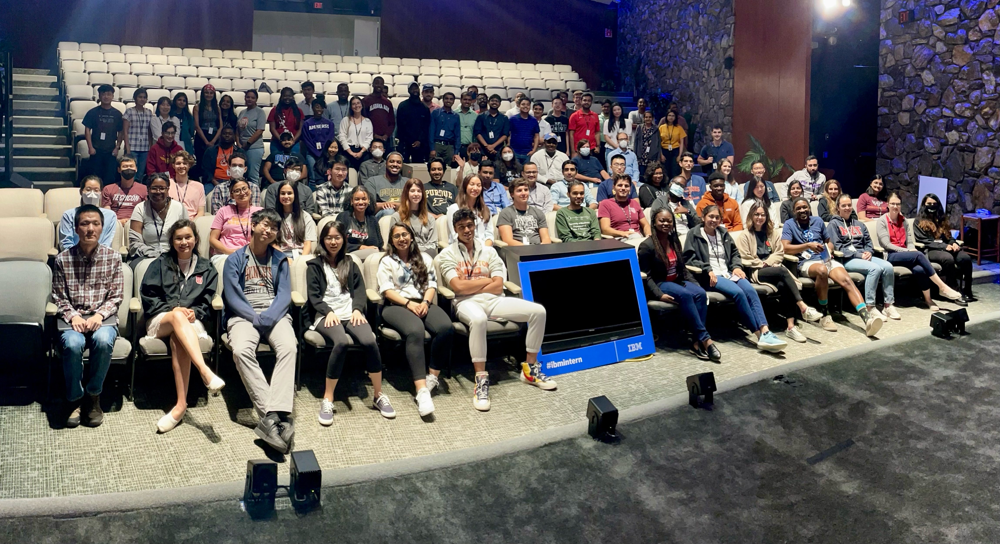

Project Overview
Role
Research Intern (UX focused)
Duration
May 2022 – August 2022
Team
HR, Marketing, UX Research
Tools
LinkedIn, Airtable, Google Suite, Canva, Adobe Suite, Slack
Methods
Design process, User interviews, Journey Mapping, Competitive Analysis, Iterative Testing
The Challenge
IBM's intern program, while technically robust, was struggling with perception issues among current interns. Interns viewed the program as less exciting and "cool" compared to internships at companies like Google, Meta, or startups, with interns perceiving IBM as primarily for "hardcore tech nerds" rather than a diverse, dynamic workplace. Competitive analysis revealed that other tech companies such as Google and Microsoft were creating more engaging, social intern experiences that generated positive buzz and strong employer branding among emerging talent.

Understanding The Users
I conducted informal surveys through Airtable forms with the IBM interns cohort, plus analyzed competitor onboarding strategies and engagement data to understand intern experiences and identify areas for improvement. Using my research I identified three key user personas, each with unique motivations and needs. This helped me tailor my engagement strategy to resonate with a diverse range of interns.
The Social Networker
Seeks an exciting internship experience, values strong culture and connections, and enjoys sharing their journey on social media.
The Well-Rounded Achiever
Interested in an internship that will challenge them with meaningful work and allow them to make a broader business impact.
The Experience Curator
Values agile work environments and hopes to build a portfolio that will make them stand out in professional settings.
User Journey Mapping
Through my findings, casual conversations with my peers, and meetings with stakeholders, I mapped the intern experience and social sharing behaviors, identifying 3 critical pain points:
Excitement Gap
IBM's research intern program felt less dynamic and more serious compared to other leading companies in the same market.
Perception Barrier
Interns and potential candidates perceived the program as exclusively for extremely technical individuals rather than a place for diverse talent.
The Experience Gap
Interns felt a disconnect between their day to day tasks and the engaging, shareable experiences they needed to enhance their professional portfolios.
Ideation & Solutions
Coffee Chats
Informal networking with leadership.

Intern Newsletter
Weekly highlights tailored for interns.

Diverse Voices Spotlight
Sharing stories across teams and geographies.

Results & Impact
rated experience as “exceeding expectations.”
increase in intern social media posts.
felt more prepared for interviews.
Key Learnings
By applying user centered design principles, even when solving a business focused challenge, this project demonstrated how addressing the emotional needs of a user can lead to significant organizational change. I learned that understanding social and emotional context is equally as important as technical skill, as authentic, pride building content and experiences outperformed polished corporate material. Moving forward, I plan to apply theese insights in all of my projects, focusing on deeper user research, stakeholder collaboration, and developing new ways to measure emotional outcomes.
Journey Snapshots
Scroll to see more →


 
